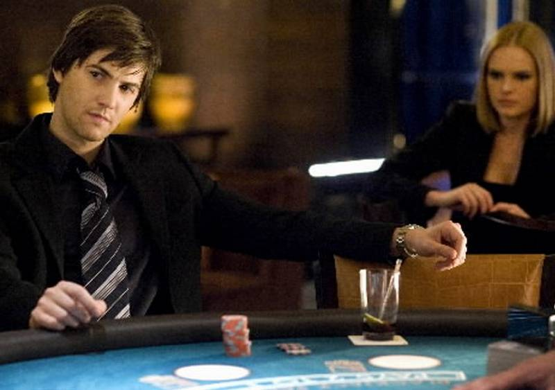
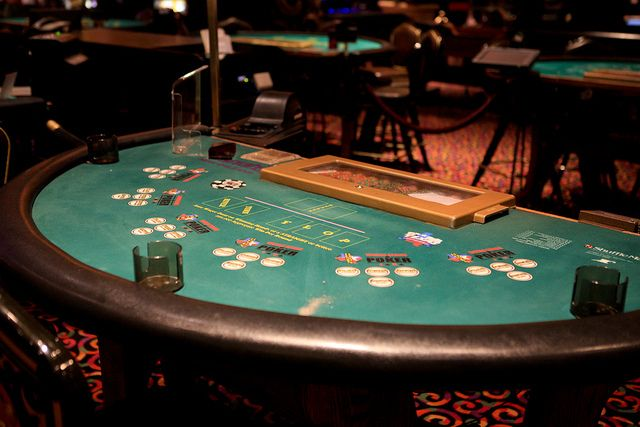
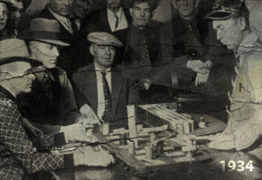
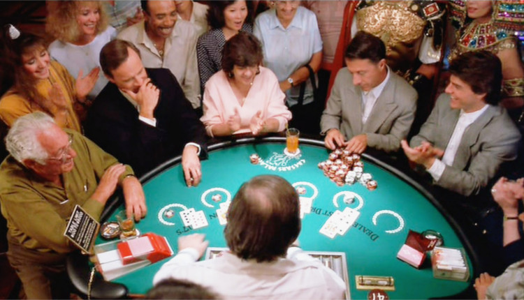
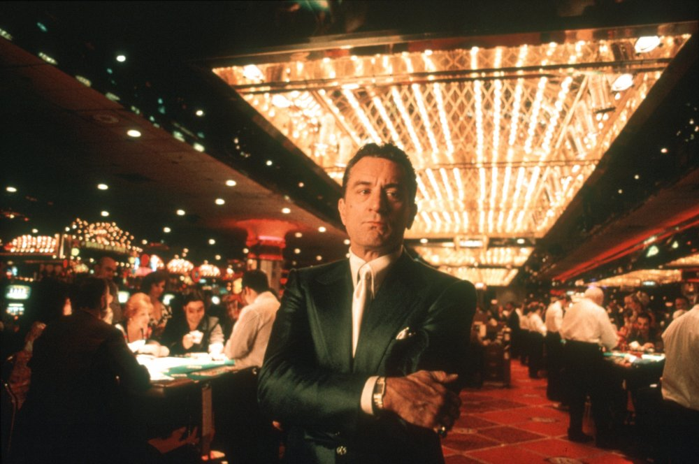
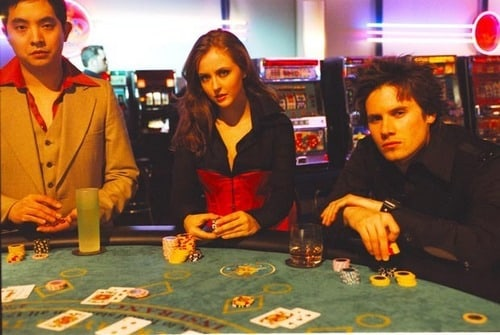

You are probably familiar with the movie 21; a few MIT students go to Vegas with the guidance of their professor in order to make some money counting cards in blackjack. You probably wonder how card counting actually works and the history of it. First we should go over the rules and history of blackjack so we can be on the same page, and then I will try to explain card counting. By the way, card counting is prohibited in most casinos, so don't be surprised if you get kicked out if you count on the fingers of your hand or something like that.
Scene from the movie 21 (2008), directed by Robert Luketic.
The origins of blackjack go back to the 1760s in France, however the game became truly popular during World War I. Blackjack is played with a standard 52 card deck and the goal is to beat the dealer by getting a score close to 21 points by drawing cards, without going over 21. Number cards are worth their number, face cards (king, queen) are worth 10 points and aces are valued 1 or 11. When the game begins, the players place their bets in some designated area. The dealer shuffles the cards and deals two cards face up to each of the players, and one card face down, one card face up to himself. If one of the players has a combination of cards worth 21 points (ace + face card, or ace + 10), he immidiately wins, given that the dealer does not have 21. This is called the "natural". The payout is 1.5 times the player's initial bet. If the dealer has a 10 or an ace, he flips his face down cards, and if he has 21, he collects the chips of all players who do not have 21. If the dealer does not have a natural, the player to the left of the dealer decides if to draw an additional card or to stay with the cards he currently has. The player can ask for additional cards, one at a time, until he decides to stops or goes over 21 (bust). When every player has done this, the dealer turns up his face-down card. If the total is 17 or more, the dealer must stand, or draw no additional card (if the dealer has an ace and counting it would bring the total over 17, he values it as 11). If the dealer has less than 17, he continues drawing cards until he reaches 17 or over.
Example blackjack table.
If the player's first two cards are the same (two nines or two kings), the player can treat them as two separate hands. The amount of the original bet then goes on one of the cards, and an equal amount must be placed as a bet on the other card. The two hands are treated separately. When the player has a pair of aces, he only can draw one card per ace. Another option open to the player is doubling their bet when the original two cards dealt total 9, 10, or 11. When the player's turn comes, they place a bet equal to the original bet, and the dealer gives the player just one card, which is placed face down. Furthermore, when the dealer's face-up card is an ace, any of the players may make a side bet of up to half the original bet that the dealer's face-down card is a ten-card, and thus a blackjack for the house. Once all such side bets are placed, the dealer looks at the hole card. If it is a ten-card, it is turned up, and those players who have made the insurance bet win and are paid double the amount of their half-bet - a 2 to 1 payoff.
The dealer cannot double down or split.
Video on rules of blackjackThe basic strategy in blackjack is hitting until a total of 17 or more, when the dealer's card is a 7 or above. The player should hit until 12 or more, if the dealer's card is below a 7. This strategy is based on the hope that the dealer goes over 21 (goes bust). The strategy for doubling down is that when the total is 11, the player should always double down. With a total of 10, the player should double down, unless the dealer has a ten-card or ace. With a total of 9, double down only when the dealer has a card lower than 7. For splitting, the player should always split a pair of aces or 8s; identical ten-cards should not be split, and neither should a pair of 5s, since two 5s are a total of 10, which can be used more effectively in doubling down. A pair of 4s should not be split either, as a total of 8 is a good number to draw to. Generally, 2s, 3s, or 7s can be split unless the dealer has an 8, 9, ten-card, or ace. Finally, 6s should not be split unless the dealer's card is poor (2 through 6).
People playing blackjack in 1934.
The strategy shown above is fairly basic, and a much more favourable approach to blackjack is card counting. This method goes back to Edward O. Thorp's 1962 book, Beat the Dealer. The strategy tries to limit the house edge, and turn the odds around, by making use of the fact that high cards (ten-cards, aces) benefit the player more than the dealer, and low cards benefit the dealer more than the player. Why?
1. High cards increase the odds of a player hitting 21.
2. High cards increase the chance that doubling down will be profitable.
3. The player has more opportunities to split.
4. High amount of 10s makes insurance bets profitable, as it increases the chance of a dealer getting 21.
5. High cards increase the probability of the dealer going over 21 (busting).
The simplest card counting system that takes advantage of the facts listed above, is called the Hi-Lo. It is a level 1 counting system. The basic principle of this system is that low cards (2 to 6) get assigned a value of +1, cards 7 to 9 get assigned a value of 0, and high cards (ten, face cards, aces) get assigned a value of -1. You sum up all of the values of cards that you see in play. The greater the result, the bigger the chances of the player winning. Every time the cards are shuffled, the count resets to 0. Therefore, a running count of +5, gives the player larger chances of winning than a running count of -2. Since blackjack is often played with more than one deck of cards, one needs to adjust the running count value. This is called the true count and is calculated the following way
For example, for a running count of +8, with 2 decks remaining
Once the true count is established, one should find the bet unit. It can be calculated using the following ratio:
The recommended bet unit is 1/1000, meaning if there is $1000 total in play, the bet unit is $1. You can learn more about bet unit here.
Finally to find the bet amount
Using this strategy, you should be able to win money if you play long enough. The problem with counting cards however, is that it makes one more likely to play inaccurately and also can slow the player down, because one has to constantly keep track of the count. So make sure you practice this technique and brush up on your mental math, before you employ this method in a casino.
Great article about a simulation of card counting made in python. Blackjack portrayed in the movie Rain Man (1988), directed by Barry Levinson.
The clever strategies of blackjack players do not go unnoticed by casinos. Card counting is not illegal in most places if no external card counting device or an assistant is used, however casinos try to introduce countermeasures to limit the practice. By the way, the argument that card counting as a skill or that it is cheating is quite interesting, as blackjack is one of the few gambling games where the player's ability is a factor. I personally think it is a skill, as it is hard to call thinking and doing math, cheating (that's also what many court rulings agree on). It's like saying that a student who reads more than is in the textbook and uses different methods to solve problems, is cheating. But you decide what your stand on this dilemma is. Anyways, as I was saying, many casinos employ countermeasures to discourage card counting. One of the most popular methods is using shuffling machines, which greatly decrease the penetration (the number of the cards dealt before a shuffle), which causes a reset of the true count very often, which greatly limits the usefulness of counting cards. Furthermore, some casinos shuffle cards when they feel like the remaining cards in the deck are particularly advantageous to the player. Some countermeasures are more direct, such as confiscation of chips or detention rooms like in the movie Casino.
A frame from the movie Casino (1995), directed by Martin Scorcese.
How to not get caught? Plays such as splitting tens, doubling soft 18/19/20, standing on 15/16, and surrendering on 14, when basic strategy says otherwise, may be a sign of a card counter. Also, don't vary your bets greatly and you should be fine. Good luck!
A frame from the movie The Last Casino (2004), directed by Pierre Gill.
I also really recommend reading about the legality of card counting, other card counting strategies other than the Hi-Lo and about card counting teams. Wikipedia and Ben Mezrich books are a great place to start. Ok, bye.
Blackjack sim online